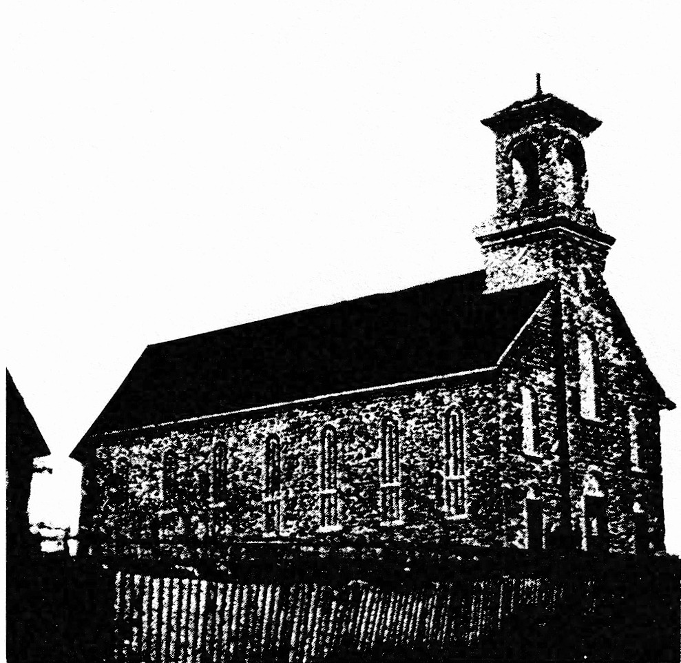
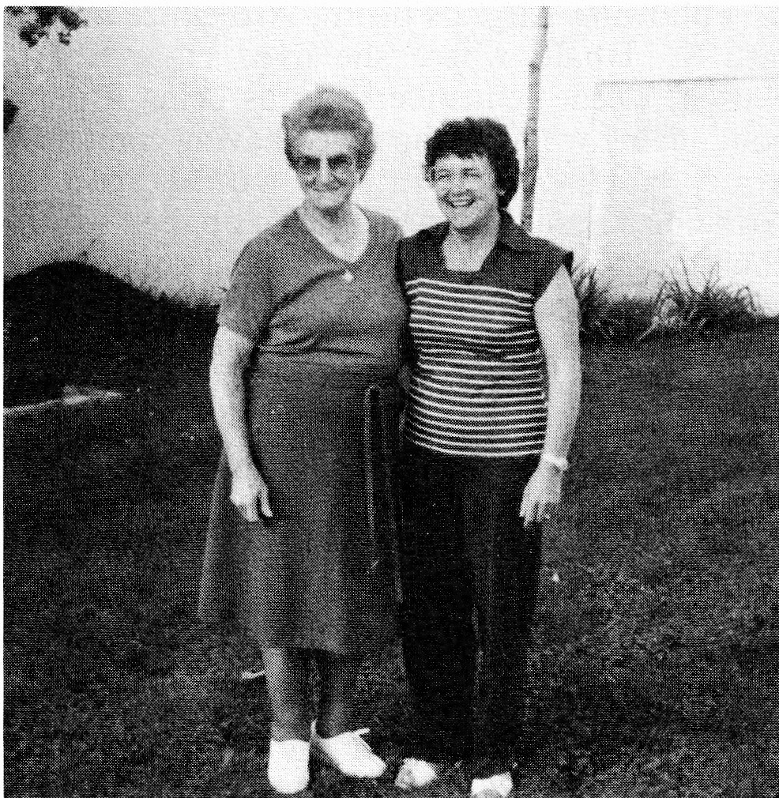

love of the land. Each one worked bit by bit and slowly the colony was organized."
The colonist families of this area attended church at St. Casimir which was a short distance away, but back then the journey probably took the better part of a day following the trail through the bush.
In 1865 the population of St. Ubald totalled 60 families and, with the numbers growing, it is understandable why the people chose to petition to have a church of their own. Rev. Belanger, priest at St. Casimir, enquired about the advantages and disadvantages of separating from St. Casimir. In 1866 a church decree was signed, giving them permission to separate, although it continued to be a mission of St. Casimir until 1871, when they acquired their first resident priest, Father Chevrotiere. He remained at St. Ubald until 1886. During this period of time a chapel was erected. The size indicated they had definitely built for the future as it was 45 by 36 feet. It served the area until 1881 when a new church was built. The chapel then became a rectory. Three hundred and seventy-eight baptisms were recorded between 1871 and 1880.

It was difficult to set up schools in the bush, but the settlers were determined their children would be educated. The farmers pooled their resources and built a number of small buildings. These buildings were spread throughout the area yet close to the settlers. To assist with the operation of these schools, a school board was organized. The first meeting took place in 1878.
Life among the pioneers of St. Ubald resembled that of any other colony in early days but was vastly different from our lifestyle of today in the 1980s:
- - it was unheard of for a young couple, who was courting, to be left alone even for a few minutes. Whether they were quietly sitting in the parlour or enjoying a buggy ride along the concession, there was always a third person present.
- - many men, young and the very young (some under the age of 15), left home in the fall to work in the bush. There they remained till spring to work as lumberjacks. This meant loneliness for them as well as for those left at home.
- - witnesses at weddings were often male relatives or friends. There seemed to be no question of a matron of honour or bridesmaids.
- - dancing was strictly forbidden. Other forms of entertainment were singing and story telling.
- - many colonists could neither read nor write. In fact, many could not sign their names, yet they were able to make legal papers or contracts.
- - families remained close to each other.
The census of St. Ubald in 1976 noted a population of 1,521. The main occupations were farming and dairy. If Simon Allain were with us today, I believe he would be pleasantly surprised by the vast improvement.
